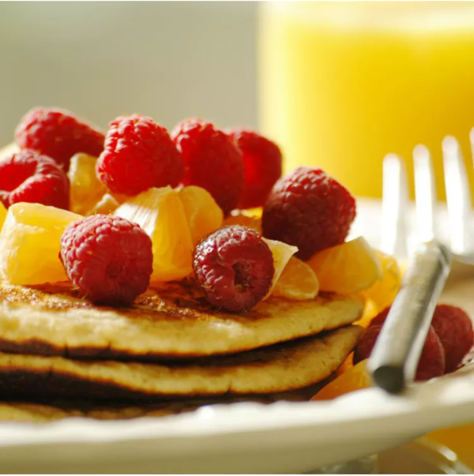

Double Whole Grain Pancakes

Picture from the Allrecipes website
The classic breakfast food, pancakes. Everyone knows and loves them, you can never go wrong with a good ol' classic. This recipe will walk you through how to make delicious double whole grain pancakes, so you can enjoy a hearty meal to start your day off right. All it takes are just two steps!
Let's get started!
Ingredients:
- 1 cup of all-purpose flour
- 1 1/3 cups of dry milk powder
- 1 teaspoon of baking powder
- 1 1/2 teaspoons of baking soda
- 1 teaspoon of salt
- 2 cups whole wheat flour
- 3/4 cup of white sugar
- 4 eggs, lightly beaten
- 3 cups water
- 1/4 cup butter, melted
- 3 tablespoons vinegar
Steps:
- In a large bowl, sift all-purpose flour, milk powder, baking powder, baking soda and salt. Stir in whole wheat flour. In a small bowl, combine sugar, eggs, water, butter and vinegar. Make a well in the flour mixture, and pour in the egg mixture. Mix until smooth.
- Heat a lightly oiled griddle or frying pan over medium heat. Pour or scoop the batter onto the griddle, using approximately 1/4 cup for each pancake. Cook until pancakes are golden brown on both sides; serve hot.
Check out other recipes!